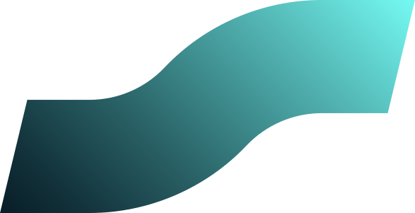
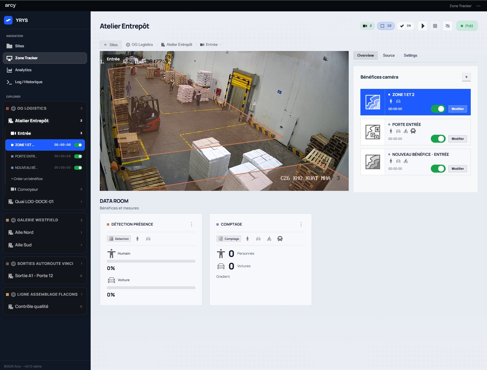
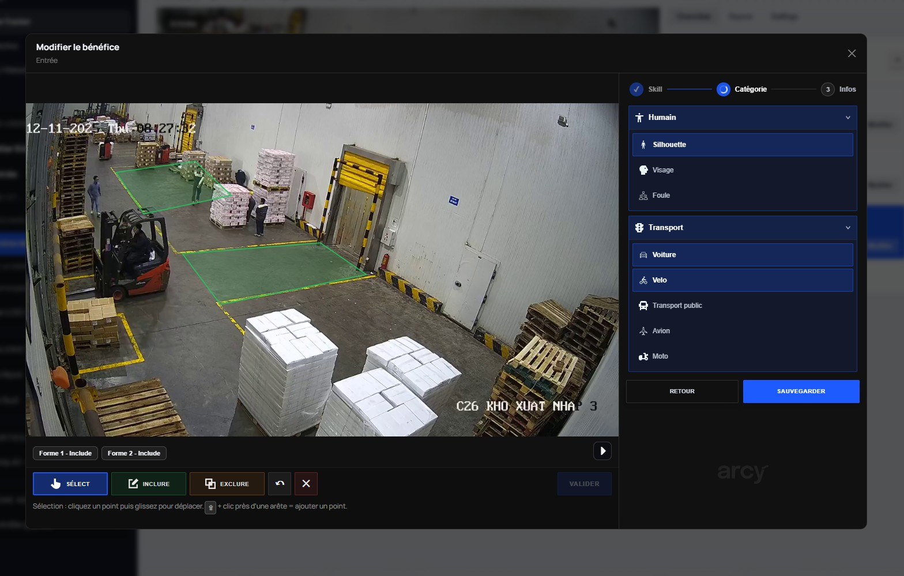
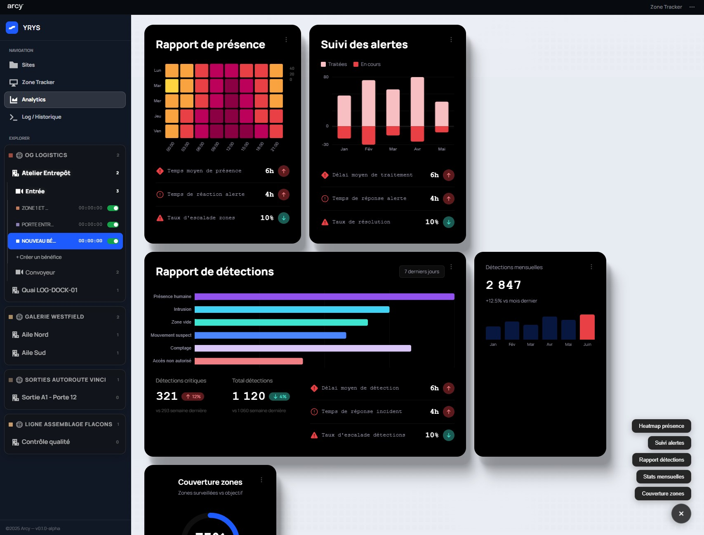

Document visualisable · version détailléeVision sur flux caméras pour TRIGO
Présentation fonctionnelle du dispositif : organisation multi-sites, paramétrage des analyses sur flux caméras, catalogue des types de bénéfices, lecture opérationnelle dans la Data Room, et articulation possible avec vos indicateurs de ligne (OEE, scrap, traçabilité). Rédaction ARCY.
1. Objet du document & lecteurs
Ce document s’adresse aux décideurs et responsables opérationnels TRIGO qui doivent comprendre ce que permet le logiciel sans parcourir l’ensemble des spécifications techniques du projet. La synthèse une page reste le point d’entrée rapide.
Les écrans illustrés proviennent de l’interface de démonstration (identité visuelle produit sur les captures).
2. Contexte & promesse produit
L’idée centrale, dans une logique de « capteurs virtuels » sur site, consiste à réutiliser le flux vidéo déjà disponible sur un site (entrepôt, hall, ligne, quai, etc.), à y définir des zones logicielles, puis à produire des indicateurs (présence, comptages, densités, signaux qualité) exploitables dans des cartes et tableaux de bord.
3. Cas d’usage « industrie 4.0 » & couverture fonctionnelle
Les familles de cas présentées côté marché (présence poste, remplissage / état machine, flux et congestion, zones sous-utilisées, contrôle qualité visuel, zones à risque) se traduisent côté logiciel par la combinaison d’une famille d’analyse (détection, comptage, heatmap, qualité) et d’une catégorie (ce que l’on cherche à détecter : humain, transport, objet).
| Intention métier (exemples) | Famille d’analyse principale | Notes |
|---|---|---|
| Suivi présence / absence, temps dans la zone | Détection : présence, zone, ligne | Data Room : cartes présence, rapport d’activité agrégé. |
| Comptage de passages, cadence, objets | Comptage : personnes, objets, zone | Modes d’analyse côté comptage (ex. gradient / MOG2) selon configuration. |
| Densité, heatmap, trajectoires | Heatmap : densité, présence, trajectoires | Famille dédiée aux représentations spatiales d’usage. |
| Signaux « qualité » ou anomalies visuelles | Qualité : fissure, humidité, contrôle général | Catégorie objet ; le détail des modèles dépend du déploiement. |
4. Parcours dans l’interface
4.0 La même logique qu’en spec : poupées russes, pas trois écrans au hasard
La documentation produit décrit une hiérarchie unique : un lieu contient des sites, un site des caméras, une caméra des bénéfices ; les polygones d’analyse sont portés par le bénéfice et se dessinent sur le flux (canvas). Les vues « accueil », « lieu », « tracker » ne sont que la traduction écran par écran de cette emboîture. Utile à retenir pour une proposition commerciale : on vend une organisation claire du parc, puis la finesse du dessin sur l’image.
-
Lieu : le plus grand cadre (pays, région, campus ou bassin logistique).
Il regroupe vos sites sans
encore parler de caméras. - Site : un établissement concret (entrepôt, agence, galerie…) où des caméras sont installées.
-
Caméra : un flux vidéo rattaché à ce site, la « fenêtre » sur laquelle toutes les analyses
s’appuient. -
Bénéfice : ce que vous voulez en tirer sur ce flux (présence, comptage, densité, signal qualité…)
avec le contexte métier (qui ou quoi observer). Une même caméra peut porter plusieurs bénéfices indépendants. -
Canvas et zones sur l’image : ce n’est pas un dossier de plus dans l’arborescence.
C’est le dessin sur la vidéo qui dit où le bénéfice s’applique (lignes, polygones, zones à inclure ou à ignorer). Les résultats
remontent ensuite vers les tableaux de bord et la Data Room.
Détail d’implémentation : spec YRYS, onglet overview (« hiérarchie des objets »), même ordre que ci-dessus.
4.1 Vue d’ensemble : ce que vous voyez au niveau « lieu »
Cartes par lieu : visuel, miniatures des caméras représentatives, rappel des bénéfices. C’est la couche la plus large de la poupée russe ; les actions (créer, modifier, exporter) restent attachées à ce niveau.
4.2 Vue lieu : descente vers les sites
Cartes par site du lieu : caméras et bénéfices visibles sur chaque carte. Un clic ouvre le suivi vidéo : on passe du cadre « site » au cadre « caméra ».
4.3 Tracker : caméra, bénéfice actif, canvas et Data Room
Lecteur vidéo + canvas pour les zones du bénéfice sélectionné ; à côté, la liste des bénéfices de la caméra et la Data Room (cartes alignées sur ce que vous avez configuré). Onglets habituels : aperçu, source, paramètres, toujours dans le même fil du plus large au plus fin.
4.4 Navigation globale
Barre latérale : exploration (lieux, sites, caméras, bénéfices) ; en-tête : liens vers Tracker, Analytics, Logs selon le périmètre déployé.
Schémas : vue bénéfice & chaîne de traitement d’image
La vue bénéfice n’est pas un écran isolé : dans le Tracker, le bénéfice sélectionné pilote à la fois le canvas sur la vidéo et les cartes affichées dans la Data Room. Le traitement côté serveur enchaîne décodage, détection, géométrie des zones et agrégation métier avant l’API consommée par l’interface.
Vue synthétique : bénéfice dans le Tracker

En amont, la création du bénéfice suit l’assistant (type d’analyse, catégorie, infos). Les polygones sont stockés sur le bénéfice et réaffichés ici à la bonne échelle.
Pipeline de traitement d’image (logique serveur)
Selon le type d’analyse, les étapes après l’intersection géométrique diffèrent (ex. cumul temps de présence, passage de ligne, masque MOG2 pour comptage). Le floutage visage, lorsqu’il est activé, s’applique sur le flux servi à l’affichage.
5. Familles d’analyse et sous-types
Le catalogue ci-dessous reprend les familles et identifiants tels que portés par la spécification produit (libellés et regroupement dans les assistants de création de bénéfices).
5.1 Détection
| Identifiant | Libellé |
|---|---|
detection_presence | Présence / absence |
detection_linecross | Franchissement ligne |
detection_zone | Détection zone |
5.2 Comptage
| Identifiant | Libellé |
|---|---|
counting_people | Comptage personnes |
counting_objects | Comptage objets |
counting_zone | Comptage zone |
5.3 Heatmap
| Identifiant | Libellé |
|---|---|
heatmap_density | Densité de flux |
heatmap_presence | Heatmap présence |
heatmap_trajectory | Heatmap trajectoires |
5.4 Qualité
| Identifiant | Libellé |
|---|---|
quality_fissure | Fissure |
quality_humidity | Humidité |
quality_check | Qualité générale |
6. Catégories cibles et correspondance avec les familles d’analyse
Chaque bénéfice précise ce qui est observé via des couples
catégorie::sous-catégorie (ex. human::silhouette, transport::voiture).
| Catégorie | Sous-types (extraits) | Familles prévues par la spec |
|---|---|---|
| Humain | Silhouette, visage, foule | Détection, comptage, heatmap |
| Transport | Voiture, vélo, transport public, avion, moto | Détection, comptage |
| Objet | Encombrement, zone encombrée, fissure, humidité, qualité générale | Heatmap, qualité |
7. Création / édition d’un bénéfice (wizard)
Le flux utilisateur standard comporte trois étapes :
- Type d’analyse : choix de la famille (détection, comptage, heatmap, qualité) puis du sous-type.
- Catégorie : filtrage des groupes autorisés pour ce type d’analyse, sélection des cibles.
- Infos : nom du bénéfice, activation, champs métier (les champs avancés peuvent être étendus selon cadrage projet).
Référence détaillée des champs API : documentation interne « Modal bénéfice » et schémas backend.
8. Zones sur la vidéo (canvas bénéfices)
Les polygones sont attachés au bénéfice. Chaque polygone est typé
include (zone d’analyse) ou exclude (masquage). Les coordonnées sont
stockées dans l’espace de référence de la vidéo au moment du dessin (zone_ref_width,
zone_ref_height) puis rééchantillonnées à l’affichage si la résolution change.
Règle produit. Plusieurs zones d’inclusion ou d’exclusion peuvent coexister sur un même bénéfice ; la logique métier d’agrégation dépend du type d’analyse (présence, comptage, etc.).
9. Data Room & cartes analytics
Les cartes affichées dans la Data Room s’adaptent aux bénéfices présents sur la caméra sélectionnée, par exemple :
- Rapport d’activité (agrégat) : vue synthétique avec sous-cartes par zone et contrôle du laps de temps.
- Détection présence : une carte par bénéfice de détection, avec options de tri.
- Comptage : une carte par bénéfice de comptage avec zones, sélection de mode d’analyse en en-tête.
L’ajout de cartes dédiées (ex. heatmap) suit le même principe : exposition des données côté API + branchement UI.
10. Modèle de données : aperçu architecture
Objets métier principaux : Site (regroupe des caméras), Camera (source vidéo, liste de bénéfices), Benefit (type d’analyse, catégories, polygones), zones de présence et configuration de comptage associées au flux. Les détails de persistance dépendent du mode déploiement (démonstration, fichier, base).
Lieu, site, caméra, bénéfice (du plus englobant au plus fin) Flux vidéo : zones dessinées, présence, comptage
11. Captures d’écran fournies
Présentation agrandie avec commentaire court à droite (vue bureau).

Vue multi-lieux
Point d’entrée opérationnel : cartes par lieu, miniatures caméras et bénéfices visibles pour prioriser les sites à suivre.

Configuration bénéfice
Assistant sur caméra : type d’analyse, catégories cibles, identité du bénéfice, aligné sur la spec centrale.

Analytics & Data Room
Blocs indicateurs rattachés aux bénéfices actifs ; les en-têtes de carte exposent les options utiles (laps de temps, tri, mode de comptage).
12. Questions de cadrage (à valider avec TRIGO)
- Périmètre déploiement : souhaitez-vous une cible exclusivement on-premise, cloud privé, ou hybride (inférence sur site, pilotage central) ?
- Volumétrie : ordre de grandeur de caméras et de sites pour dimensionner latence, stockage et rétention des indicateurs ?
- Gouvernance : exigences RGPD / floutage visages, durée de conservation des séquences, intégration IAM (SSO) ?
- Intégrations : envoi des compteurs et événements vers ERP, MES, SCADA ou files messages (Kafka, MQTT) ?
- Branding : faut-il livrer l’interface sous marque TRIGO uniquement (co-branding ARCY en pied de page) ?
Si vous nous confirmez ces points, une itération du document pourra inclure schéma d’architecture cible, planning type (audit, phase pilote, industrialisation) et matrice KPI par site.